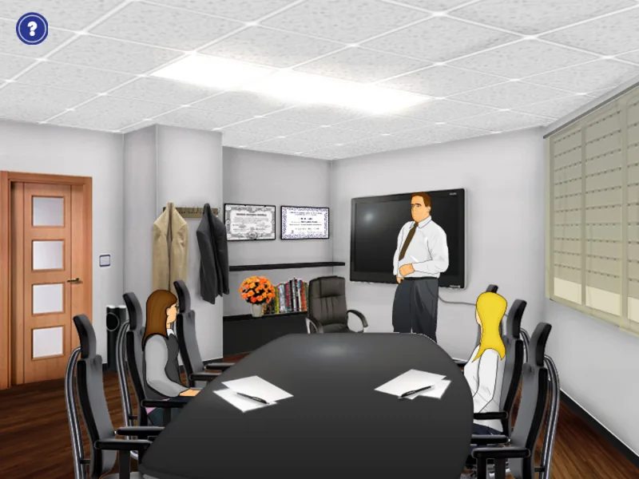

Coordinación de Economía y Calidad
Asuntos económicos de la ONG, control de gastos y comprobación de que la organización se rige por criterios de calidad.
- Selección de presupuestosPedir presupuestos de suministros y limpieza a tres empresas y elegir el más adecuado.
- Organización de gastosDistribuir los recursos según el presupuesto y las directrices económicas de la ONG.
- Autoevaluación institucionalCon la memoria de la ONG, en una sesión del Centro de Formación en Calidad.